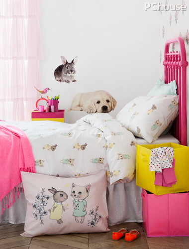
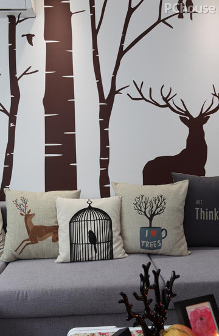
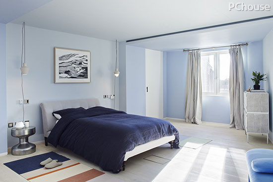
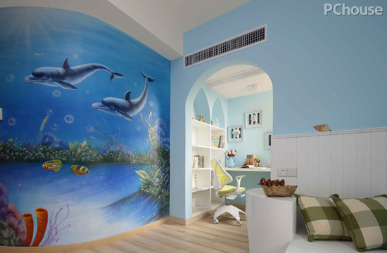

星爷最新力作《美人鱼》除了有浪漫的爱情元素，同时也在用喜剧的方式讲述环保的哲理。荣获奥斯卡最佳男主头衔的莱昂纳多也在颁奖典礼上，真诚地号召人们关注全球气候变暖问题。环保、与自然和谐相处，已为越来越多人关注。那么，在春暖花开的季节，又如何将绿色请进家，让自然的元素巧妙地渗透每一个角落?请随小编一起探寻家与自然的和谐相处之道吧。
PART1与鲜花绿植为伴栖居
在小小的阳台，搭建出专属自己的秘密花园，与自己的爱宠，看看蓝天，听听鸟语，浇浇花草，简单而美好的日子不过如此了。
PART2自然元素单品带回家
一块绿色地毯，就好像在家里种出一片绿地，清新又好看。搭配原木家具、亮色单品，满屋的春天即视感。
给墙面披上青绿色外衣，加以优雅鲜花挂画点缀，美如春之田园。两三个灵动小鸟抱枕，清冷感的家一下子就活泼热闹起来了。
PART3动物也要来大凑热闹
|  |
小猫，小狗，兔子，这些最可爱的动物们欢聚一堂，混进大片粉色洋溢的世界里，营造出可爱又梦幻的氛围。 墙面绘上森林、小动物，靠包上的小鸟小花也来凑热闹，邀你和你的家人朋友一起走进大自然最亲和烂漫的世界里。 |
 |
PART4海洋蓝让家更清新
|  |
小猫，小狗，兔子，这些最可爱的动物们欢聚一堂，混进大片粉色洋溢的世界里，营造出可爱又梦幻的氛围。 |
|
小猫，小狗，兔子，这些最可爱的动物们欢聚一堂，混进大片粉色洋溢的世界里，营造出可爱又梦幻的氛围。 |
 |